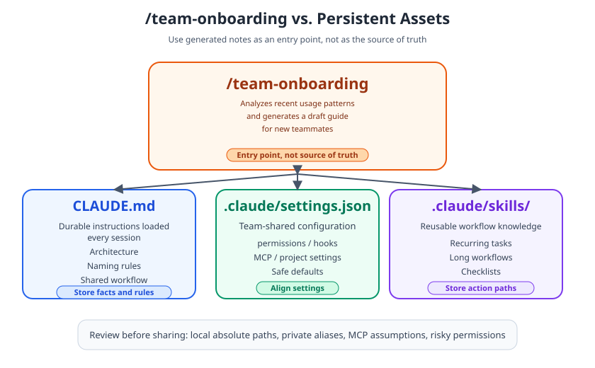
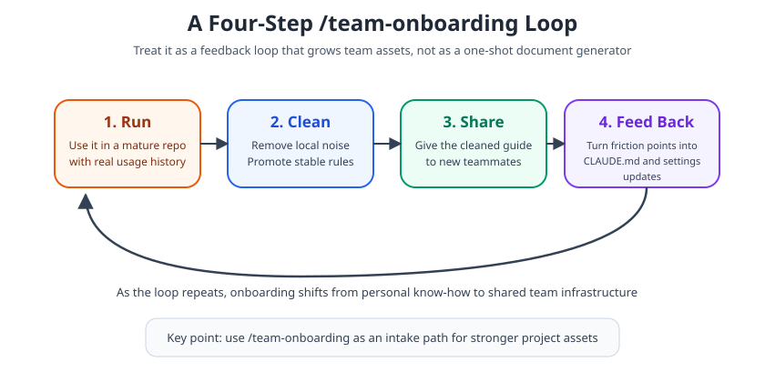

Claude Code /team-onboarding Guide: How to Speed Up New Teammate Ramp-Up¶
For / Key Points
For: Tech leads, engineering managers, and developer-experience owners who are rolling out Claude Code to a team and want a repeatable ramp-up path for new teammates.
Key Points:
/team-onboardinganalyzes the last 30 days of sessions, commands, and MCP usage to generate a shareable Markdown guide2- The output is useful, but it is not the canonical source. Durable rules should still live in
CLAUDE.md,.claude/settings.json, and.claude/skills/456 - Review local-machine assumptions before sharing. MCP setup, local paths, and permissions need explicit scrutiny
When you hand Claude Code to a new developer, the real bottleneck usually is not installation. It is explaining what matters in this repository. /team-onboarding, added in Claude Code v2.1.101 on April 10, 2026, turns that tribal setup knowledge into a Markdown guide draft1.
The real question is not whether the command exists. The real question is how much you should trust its output, and what still belongs in version-controlled project assets.
What /team-onboarding actually generates¶
In practical terms, /team-onboarding is a team setup guide generator. The official command reference says Claude Code analyzes session history, commands, and MCP server usage from the last 30 days and produces a Markdown guide that teammates can paste as their first message2.
The Week 15 release notes describe the intended workflow clearly: run it in a project you have actually used, then give the generated guide to new teammates so they can reproduce the working setup3.

That is why the real value is not the command itself. The value is that it compresses a strong teammate's working habits into something reusable.
Start with this basic workflow¶
In practice, it is safer to try /team-onboarding in a mature repository than to roll it out everywhere immediately.
claude --version
claude
# Run inside the interactive session
/team-onboarding
If your version is older, the command may not appear at all. /team-onboarding was added in v2.1.101, so checking the version is the first step1.
The docs also note that built-in command availability can vary by plan, environment, and platform2. So if you do not see it, the first things to verify are your update state and login state.
That leads to the next question: should you distribute the generated Markdown as if it were the team's final answer? In most cases, no.
How it differs from CLAUDE.md, settings, and skills¶
/team-onboarding is strong as an entry point, but it is not where permanent team rules should live. The easiest way to think about it is to separate roles.
| Tool | Primary role | Sharing scope | Best fit |
|---|---|---|---|
/team-onboarding | Turns recent usage into prose | Draft for distribution | Initial setup flow, what to read first |
CLAUDE.md | Durable instructions loaded every session | Shared in the repo | Architecture, naming rules, common workflow4 |
.claude/settings.json | Team-shared configuration | Shared in the repo | permissions, hooks, MCP, project settings57 |
.claude/skills/ | Reusable procedural knowledge | Shared in the repo | recurring tasks, long workflows, checklists6 |
The practical pattern is simple: use /team-onboarding to discover stable rules, then promote those rules into the right canonical place. The official docs position CLAUDE.md as a place for context new teammates also need, and project settings and project skills can likewise be shared through source control456.
The three things to review before sharing¶
This is the critical part. The command is built from session and command history2. That means the generated output can easily capture not just your team standard, but one specific person's local machine habits. That is an inference from the documented input sources, and it matters in practice.
Before you share the result, review these three areas:
- Local-machine assumptions: absolute paths, temp directories, and private aliases
- MCP assumptions: whether a given MCP setup is really required for everyone, or should be moved into project settings or managed settings
- Permissions and safety: whether one person's risky allowances are accidentally being promoted into a team default
The Claude Code security and IAM docs recommend managing permissions through version control and managed settings where possible78. If you want even less onboarding drift, aligning the environment through devcontainers reduces variance further9.
The rollout pattern that works best¶
The most reliable operating model is to use /team-onboarding not as a one-shot document generator, but as a tribal-knowledge detector.

- Have an experienced teammate run
/team-onboardinginside a mature repository - Remove local-only noise from the output, and promote durable rules into
CLAUDE.mdor.claude/settings.json - Share the cleaned Markdown as an initial guide for new teammates
- Feed real onboarding friction back into project files and shared assets
Once that loop repeats, onboarding stops being just a document. It becomes part of your Claude Code operating system.
Summary¶
The real value of /team-onboarding is not that it writes a guide for you. The deeper value is that it reveals where your team's working knowledge is still scattered.
Teams that simply trust the generated Markdown will save some time. Teams that use it to decide what belongs in CLAUDE.md, settings, and skills will build faster ramp-up and better long-term repeatability.